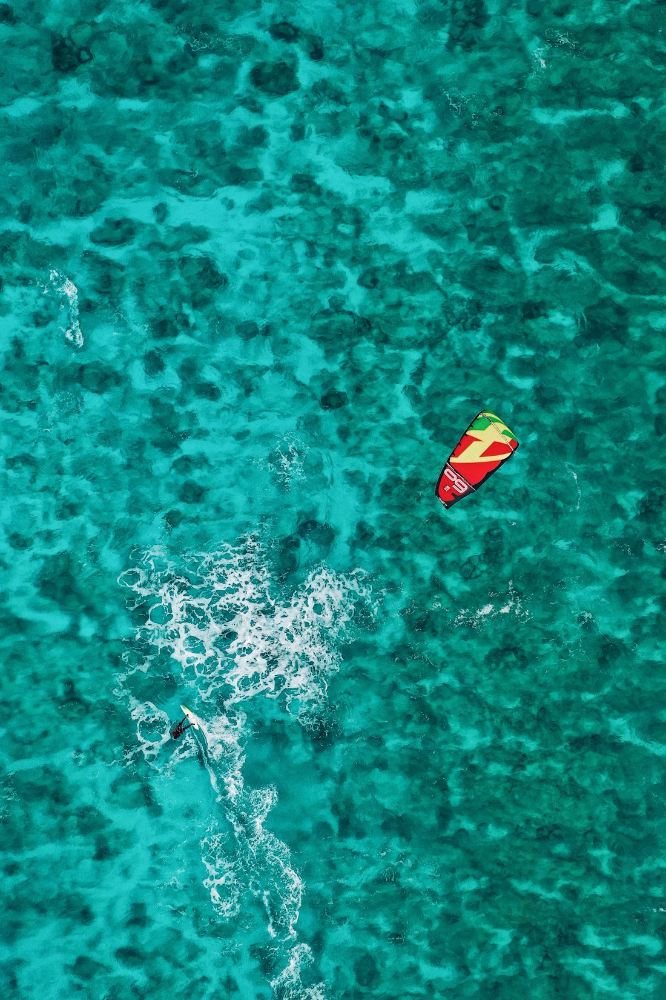

Voltar ao início
Mais tempo na água.
Guarda, montagem e manutenção de equipamento para um dia de velejo mais simples.
Seu equipamento pronto para o próximo vento.
A guarderia da Kanaloa reúne os serviços anunciados pela equipe: guarda de equipamentos, montagem e manutenção. Converse diretamente para conhecer disponibilidade e condições.
Consultar a guarderia
Imagem ilustrativa